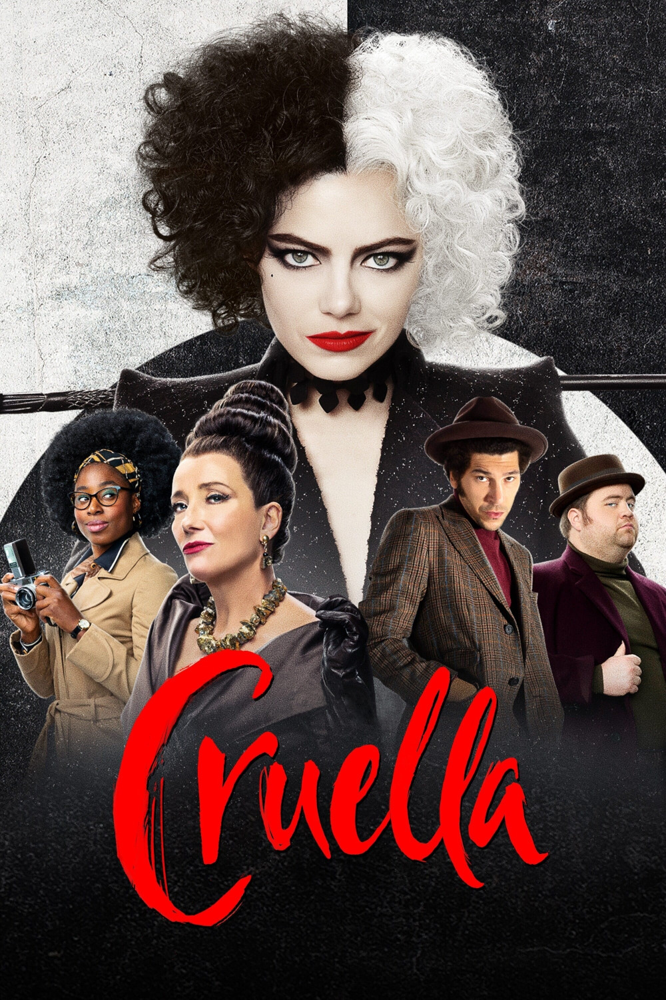

Мировая премьера: 28 мая 2021
Слоган: Привет, жестокий мир.
Сюжет: Фильм, действие которого разворачивается на фоне лондонской панк-рок революции 1970-х годов, повествует о юной аферистке по имени Эстелла, умной и талантливой девушке, которая задалась целью стать знаменитым дизайнером одежды. Она заводит дружбу с двумя воришками, которым нравится её озорной характер, и вместе они обустраивают свою криминальную жизнь на улицах Лондона. Однажды дар Эстеллы в области моды привлекает внимание баронессы фон Хеллман, легендарной и пугающе высокомерной кутюрье. Однако, их встреча запускает цепочку событий и откровений, которые заставят Эстеллу дать волю своей тёмной стороне и превратиться в эпатажную и мстительную Круэллу де Виль.
Режиссёр: Крейг Гиллеспи
В основе: Роман Доди Смит "101 далматинец" (Великобритания, 1956)
В ролях: |
Эмма Стоун | Эстелла Миллер / Круэлла Де Виль |
| Эмма Томпсон | Баронесса фон Хеллман |
|
| Джоэль Фрай | Джаспер |
|
| Пол Уолтер Хаузер | Хорас |
|
| Марк Стронг | Джон |
|
| Эмили Бичем | Кэтрин Миллер |
|
| Типпер Сайферт-Кливлэнд | Эстелла в 12 лет |
|
| Джон МакКри | Арти |
|
| Джейми Деметриу | Джеральд |
|
| Кирби Хауэлл-Баптист | Анита Дарлинг |
|
| Кайван Новак | Роджер Дирли |
Бюджет: $ 100 млн.
Кассовые сборы в США: $ 86 млн.
Кассовые сборы в мире: $ 234 млн.
Продолжительность: 2 ч. 5 мин.
Рейтинг: 7.3